嗨，我是Min，你来啦！欢迎一键三连！
大神Karpathy每一次发言都犹如地震了。
不是OpenAI发了新模型，是Karpathy在X发了一个gist。
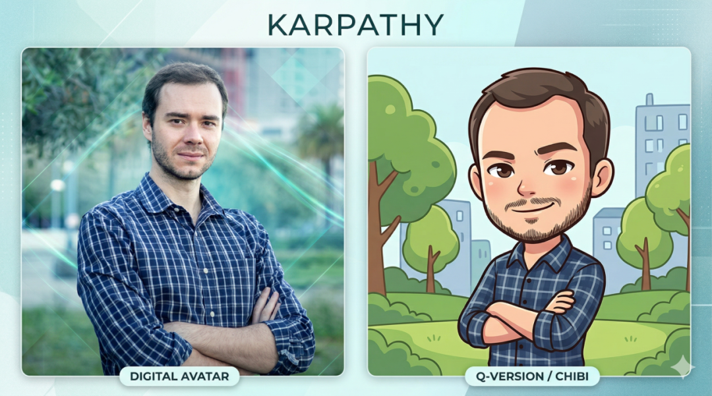
原文：https://x.com/karpathy/status/2039805659525644595
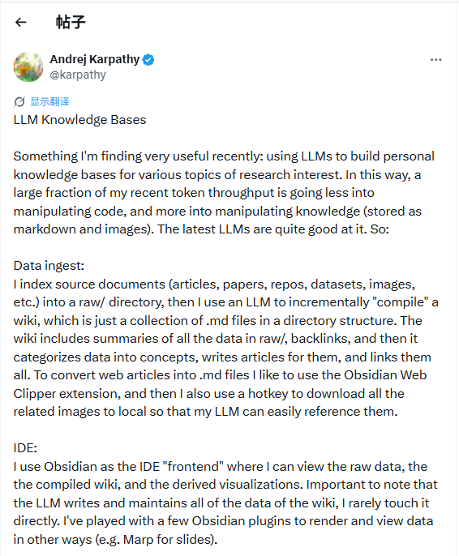
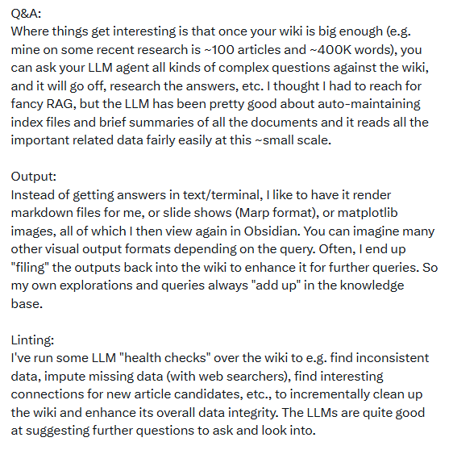
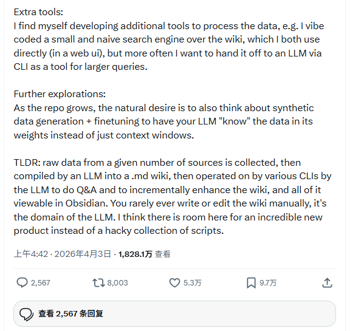
另外No Priors播客也有深度讨论
B站搬运版：https://www.bilibili.com/video/BV1PbAczPEiZ
没有代码、没有产品，就一篇纯文字：聊他怎么搭建自己的知识库。
过去常用的就是RAG的方法，Karpathy发现了一个致命问题，他在gist里说了一句特别扎心的话：“the LLM is rediscovering knowledge from scratch on every question. There‘s no accumulation.”
翻译成人话就是：你每次打开新对话，AI都是个失忆患者。你上传文件、让它总结、让它分析，聊得热火朝天。
对话一关，一切归零。
你以为你在积累知识？
不，你只是在重复消费。
这不是你使用姿势不对，是RAG这个模式天生有缺陷：只有检索，没有积累。
所以当Karpathy这套知识库方法论一出，结果你猜怎么着？
两天转发量直接炸穿。
他的解法：让AI自己维护一个Wiki。
Karpathy给的方案，不是“更好的RAG”而是直接换了一个玩法。
他的比喻我特别喜欢：Obsidian 是 IDE，LLM 是程序员，Wiki 是代码库。
程序员不会每次写功能都从头敲一遍，写一次，提交，下次直接调。
知识也应该这样：编译一次，持续维护，不断复利。具体结构分三层：
原始素材层：你读的文章、论文、截图，原封不动，AI只读不改。
Wiki层：AI自动生成的Markdown文件，每个概念、人物、工具都有独立页面，互相链接。
Schema层：告诉AI怎么维护这个知识库的规则文件。
你只管喂素材，AI负责干三件事：
Ingest（消化）：读完文章，提取关键信息，更新相关页面，建立交叉引用。一篇文章进来，可能触发10到15个页面的更新。
Query（查询）：你提问，AI在Wiki里搜，综合回答，标来源。好的答案直接写回Wiki。
Lint（健康检查）：定期扫描，查矛盾、孤立页面、过时内容。
这三件事，以前每件都要人来做，枯燥到没人坚持得住。
现在全扔给AI，完美！
X上这篇文章的评论区，满屏都是“太牛了、学到了......”，然后有个大神直接把它做成了一个Skill，彻底把Karpathy的知识库思路转化成了skill：llm-wiki-skill。
装上之后，你只需要说一句：去消化这个素材，剩下的事它自己干。
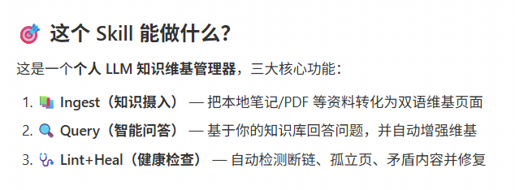
以后不用自己辛辛苦苦做笔记和整理文档了，把这些脏活累活全扔给 AI，让它给你当一个【全自动的超级图书管理员】。
1. 无脑往里扔资料（扔进黑洞）
你不需要分类。不管是网页文章、PDF、图片还是杂乱的文档，你只需要把它们统统丢进一个叫【原始数据】的文件夹里就行了。
2. AI 帮你当田螺姑娘（自动整理）
你什么都不用管，AI 会在后台默默帮你把这些资料全部读一遍。
它会自动提取出关键概念，写好总结，还会把相关联的内容用链接串起来，直接给你生成一个整整齐齐的个人维基百科。
核心点是：这个维基百科是 AI 写的，你基本上不用动手敲字。
3. 有事直接问它（随叫随到）
当你想用这些资料的时候，不再是去搜索框里搜关键词，而是直接对 AI 下达指令。
比如你可以说：把我刚才扔进去的那些关于明后年规划的文档整理一下，给我生成一份可以直接用来汇报的 PPT，或者画一个数据对比图。
AI 就会去你那个整理好的知识库里找答案，并且直接给你产出 PPT 或者图表。
4. 知识库越用越聪明（自我进化）
你每次让 AI 生成的答案、图表或总结，都可以直接存回这个知识库里。
而且，AI 还会像个强迫症一样，时不时帮你检查一下知识库，告诉你“老板，这块资料缺了点东西，要不要我去网上搜一下补齐？”或者这篇和那篇看起来有矛盾你要不要看一眼？”
这还没当上老板呢，又有一种当老板的爽感有木有，反正我觉得有，哈哈哈！
我是让腾讯小龙虾Qclaw帮我拉取和部署的，给你们分享下我部署的过程以及使用的效果：
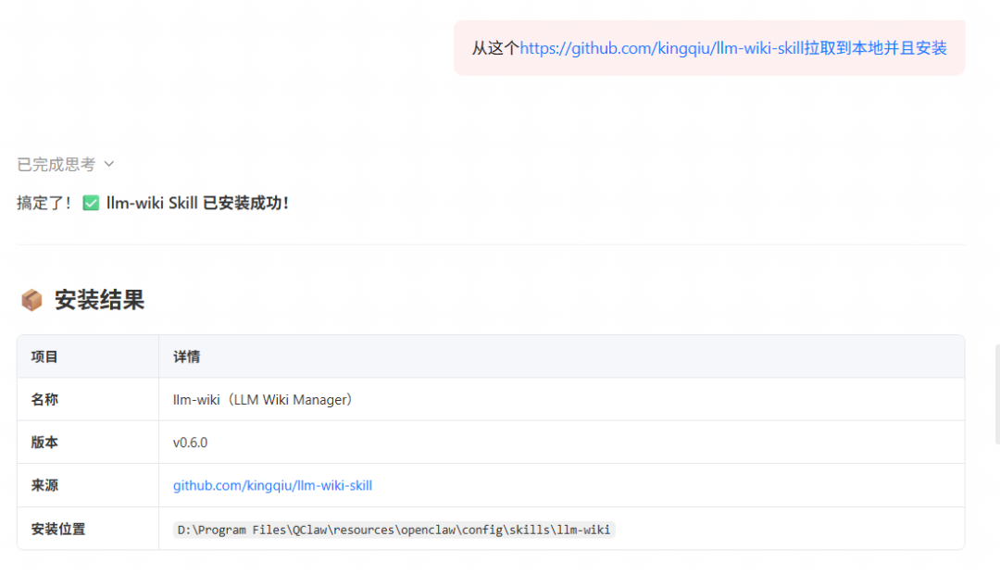
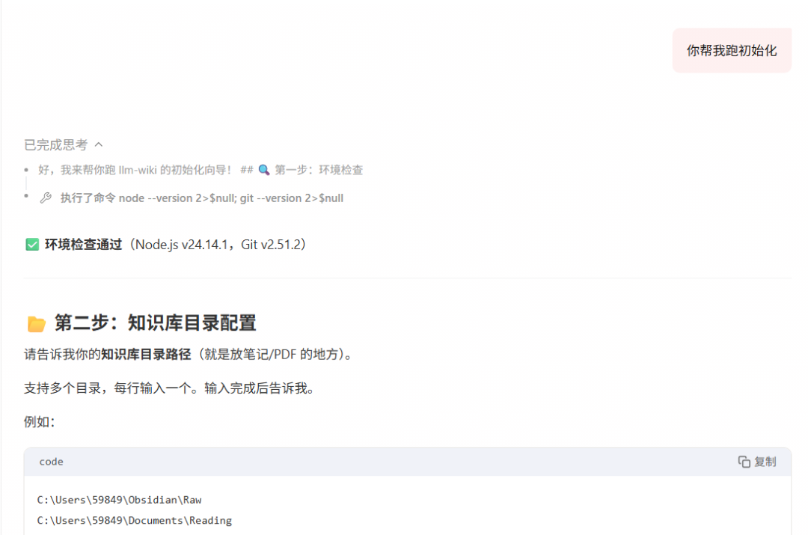
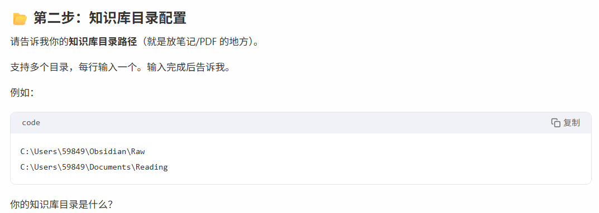
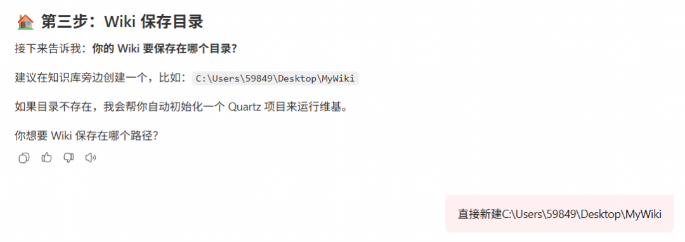
就很小白的操作，我一言、它一语在帮我执行落地......
我把Karpathy那篇文章做了个测试，我的知识库里目前只有这两篇素材（如上X上那篇文章的中英文版本），但已经能感受到区别了。
我问AI：“RAG和LLM Wiki最核心的区别是什么？”
它没有从头推导而是直接从Wiki里调出两个页面，结果如下：
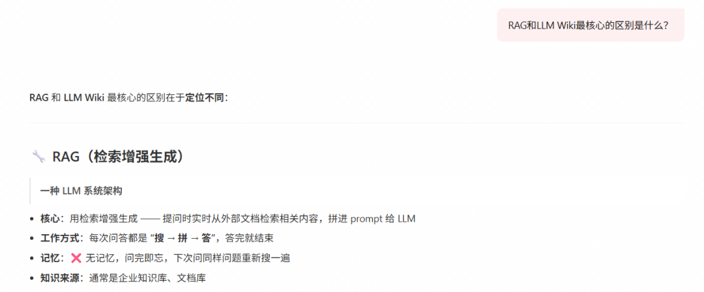
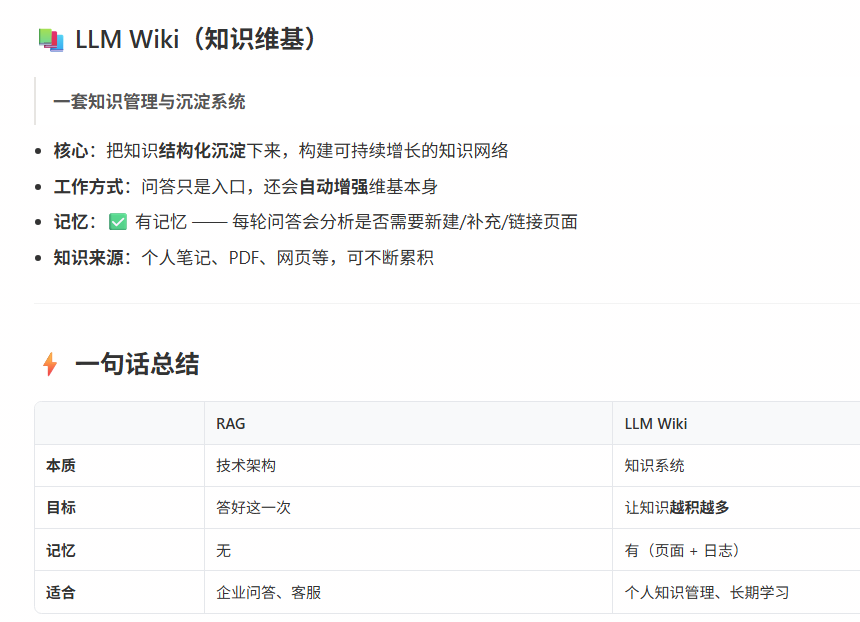
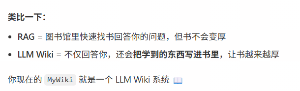
跑起来是什么感觉，Karpathy说：等知识库积累到100篇甚至更多文章时，AI面对复杂问题时会自己在Wiki里检索、交叉引用、整理答案，完全不需要RAG。
朋友们，你们也可以试一下哈！
适合谁？
重度阅读者：每周消化大量文章、报告的人
内容创作者：追踪某个领域，写文章前直接查Wiki，不用翻旧笔记
研究型用户：需要跨文档综合分析的人
不适合偶尔问几个问题的场景，搭这套系统的成本大于收益。
最后
Karpathy说，这套知识库是 “persistent, persistent, compounding artifact” 持久化的、复利积累的资产。
每喂进去一篇新文章，整个知识库就变得更厚、更立体、更有用。积累到一定程度，你会发现AI给出的答案质量完全不同：
它不是在你，它是在调用已经整合好的知识。
Skill地址：
https://github.com/kingqiu/llm-wiki-skill
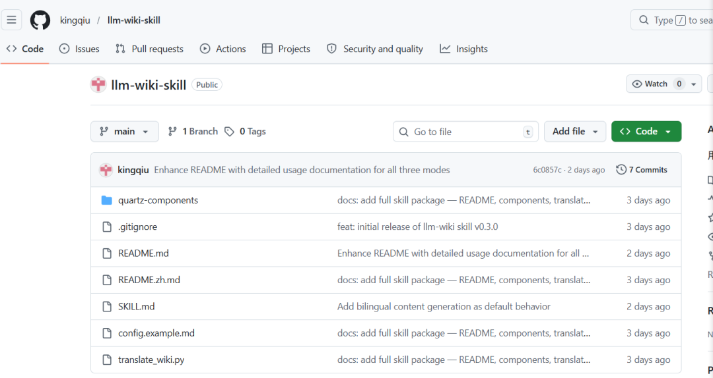
分享、在看与点赞，我都值得都拥有哇！
长
按
关
注
一路同行
ID :minerhaoxue—C
一起寻找生命中的光.....